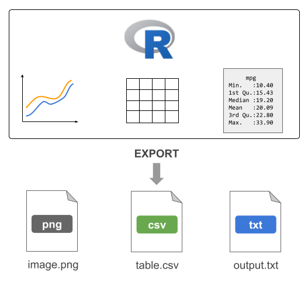
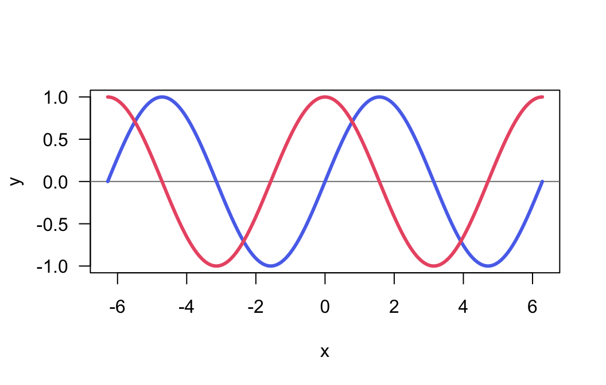

18 Exporting Data
One common task in most data analysis projects involves exporting data to external files.
18.1 Exporting Tables
One common task in most data analysis projects involves exporting derived data tables (e.g. clean data sets, or processed tables). To accomplish this task you can use any of the write-table functions such as write.table(), write.csv(), etc.
# blank separated (default)
write.table(mtcars, file = 'mtcars.txt', row.names = FALSE)
# tab-separated value
write.table(mtcars, file = 'mtcars.tsv', sep = "\t", row.names = FALSE)
# comma-separated value
write.csv(mtcars, file = 'mtcars.csv', row.names = FALSE)18.2 Exporting Text
Another type of data-exporting operation has to do with “unstructured” text, and text output in general. By “unstructured” I mean non-tabular data.
Consider the following piece of code, which writes the elements of a character vector some_text, one element per line (via a file connection) to the file mytext.txt in the local working directory:
# create a connection to a file
# (assuming output file in working directory)
txt <- file("mytext.txt")
# write contents to the file
writeLines(text = some_text, con = txt)Note: Calling file() just creates the connection object but it does not open it. The function writeLines() is the one that opens the connection, writes the content to the file mytext.txt, and then closes the connection on exiting.
The previous code can be compactly written with one command without the need to explicitly use the connection function file() as follows:
# write contents to the file
writeLines(text = some_text, con = "mytext.txt")18.3 Sending output with cat()
You can use cat() to concatenate and print information to a file. For instance, say you are interested in some descriptive statistics about the column mpg (miles per gallon) from the mtcars data frame:
# summary statistics of mpg
min(mtcars$mpg)
max(mtcars$mpg)
median(mtcars$mpg)
mean(mtcars$mpg)
sd(mtcars$mpg)Suppose the goal is to generate a file mpg-statistics.txt with the following contents:
Miles per Gallon Statistics
Minimum: 10.4
Maximum: 33.9
Median : 19.2
Mean : 20.09062
Std Dev: 6.026948How can this goal be achieved? We can create objects for all the summary statistics, and then involke cat() as many times as there are lines of text to be exported in the output file.
# summary statistics of mpg
mpg_min <- min(mtcars$mpg)
mpg_max <- max(mtcars$mpg)
mpg_med <- median(mtcars$mpg)
mpg_avg <- mean(mtcars$mpg)
mpg_sd <- sd(mtcars$mpg)
# name of output file
outfile <- "mpg-statistics.txt"
# first line of the file
cat("Miles per Gallon Statistics\n\n", file = outfile)
# subsequent lines appended to the output file
cat("Minimum:", mpg_min, "\n", file = outfile, append = TRUE)
cat("Maximum:", mpg_max, "\n", file = outfile, append = TRUE)
cat("Median :", mpg_med, "\n", file = outfile, append = TRUE)
cat("Mean :", mpg_avg, "\n", file = outfile, append = TRUE)
cat("Std Dev:", mpg_sd, "\n", file = outfile, append = TRUE)Notice that the first call to cat() exports the text that is supposed to be in the first line of content in the output file outfile. The subsequent calls to cat() use the argument append = TRUE so that the next lines of content are appended to the existing outfile. If we don’t use append = TRUE, R will override the existing contents in outfile.
18.3.1 Sending output with cat()
To make the content in "mpg-statistics.txt" look “prettier”, limiting the number of decimals digits to just 2, you may consider using sprintf(). This function allows you to print strings using C-style formatting.
cat("Miles per Gallon Statistics\n\n", file = outfile)
cat(sprintf("Minimum: %0.2f", mpg_min), "\n", file = outfile, append = TRUE)
cat(sprintf("Maximum: %0.2f", mpg_max), "\n", file = outfile, append = TRUE)
cat(sprintf("Median : %0.2f", mpg_med), "\n", file = outfile, append = TRUE)
cat(sprintf("Mean : %0.2f", mpg_avg), "\n", file = outfile, append = TRUE)
cat(sprintf("Std Dev: %0.2f", mpg_sd), "\n", file = outfile, append = TRUE)Look at the call of sprintf() in the second line: the one that prints the minimum value of miles-per-gallon:
sprintf("Minimum: %0.2f", mpg_min)What does sprintf() do in this example? It takes the string "Minimum: %0.2f" and the numeric value mpg_min. Observe that the provided string contains some weird-looking characters: %0.2f. This set of characters have a meaning and they are used as a place holder to be replaced with the formatted value mpg_min. Specifically, the notation %0.2f indicates two decimal digits of a double precision value. In other words, a numeric value 10.4 will be printed using two decimal digits as: 10.40. Likewise, a number such as 20.09062 will be printed as 20.09. If you are curious about the various types of C-style string formatting place-holders, check the documentation of sprintf()
help(sprintf)18.4 Redirecting output with sink()
Another interesting function is sink(). This function is very useful when you want to export R output as it is displayed in R’s console.
For example, consider the following output from summary() applied on three columns of mtcars
summary(mtcars[ ,c('mpg', 'hp', 'cyl')]) mpg hp cyl
Min. :10.40 Min. : 52.0 Min. :4.000
1st Qu.:15.43 1st Qu.: 96.5 1st Qu.:4.000
Median :19.20 Median :123.0 Median :6.000
Mean :20.09 Mean :146.7 Mean :6.188
3rd Qu.:22.80 3rd Qu.:180.0 3rd Qu.:8.000
Max. :33.90 Max. :335.0 Max. :8.000 To be able to keep the same output displayed by R, you must use sink(). This function will divert R output to the specified file.
# sink output
sink(file = "mtcars-stats.txt")
# summary statistics
summary(mtcars[ ,c('mpg', 'hp', 'cyl')])
# stops diverting output
sink()The use of sink() is a bit different from other data-exporting functions. As you can tell from this example, we start by invoking sink() and specifying the name of the output file. Then we include the commands whose outputs will be redirected to the target file. In order to stop the redirecting mechanism, we need to invoke sink() again, without specifying any arguments.
Consider one more example involving the use of sink() to send the output from running a linear regression of mpg on hp with the function lm(). To make things more interesting, we will also export the results returned by summary() on the regression object. And not only that; we will also run a t-test between am and hp with t.test(), and export the results of such test.
# sink output
sink(file = "regression-output.txt")
# regression of mpg onto hp
reg = lm(mpg ~ hp, data = mtcars)
summary(reg)
# t-test
t.test(hp ~ am, data = mtcars)
# stop sinking process
sink()18.5 Exporting R’s Binary Data
R also allows you to save objects in R’s binary format with the functions save() and save.image(). It is customary to use the RData extension for the files created by save() and save.image(). You may also find users specifying the old extension .rda or some other variation.
You can use save() to save specific objects from your current session. For example, here is how to save the data frame mtcars3
mtcars3 = mtcars[ ,c('mpg', 'hp', 'cyl')]
save(mtcars3, file = 'mtcars3.RData')The difference between save() and save.image() is that the latter saves all the objects in your current session. This is actually the function that is run behind the scenes every time you quit R and accept to save the so-called workspace image.
You can share mtcars3.RData with any other R user, regardless of the operating system that they use. To read in binary R files, use load().
18.6 Exporting Images
In addition to exporting tables and/or a combination of text-numeric output in the form of several objects, another typical data-exporting activity involves saving graphics, and images in general.
R comes with a handful of functions to export graphics in various formats:
| Function | Description |
|---|---|
png() |
Portable Network Graphics |
jpeg() |
Joint Photographic Experts Group |
pdf() |
Portable Document Format |
bmp() |
Bitmap |
tiff() |
Tag Image File Format |
svg() |
Scalable Vector Graphics |
For example, say you have a plot like the following one:
x = 2*pi * seq(from = -1, to = 1, by = 0.01)
sin_x = sin(x)
cos_x = cos(x)
plot(x, sin_x, type = "n", las = 1, ylab = "y")
abline(h = 0, col = "gray50")
lines(x, sin_x, lwd = 3, col = "#5A73EB")
lines(x, cos_x, lwd = 3, col = "#eb5a73")
To export the graphic into a PNG image file, we use png() and dev.off()
png(file = "myplot.png", bg = "transparent")
plot(x, sin_x, type = "n", las = 1, ylab = "y")
abline(h = 0, col = "gray50")
lines(x, sin_x, lwd = 3, col = "#5A73EB")
lines(x, cos_x, lwd = 3, col = "#eb5a73")
dev.off()The usage of png() and friends is similar to sink(). By default, when you use any of the graphing functions such as e.g. plot(), barplot(), boxplot(), etc, the image is rendered in the graphics device that comes in R (or RStudio). By using png(), the rendering mechanism is diverted into an external file. This is why we need to use the function dev.off() to shut down the device used when we are done exporting an image to an external file.